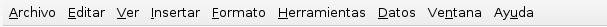
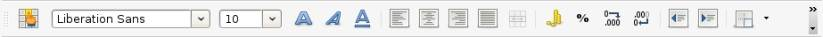
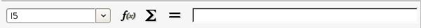
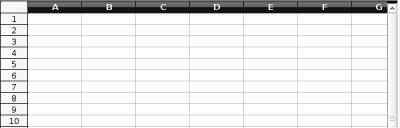

El entorno de trabajo de nuestra hoja de cálculo se refiere al conjunto de herramientas que te ofrece el programa, para que puedas introducir tus datos en las celdas y puedas modificarlos respecto a tus gustos y realizar las operaciones matemáticas que necesites.
Al igual que ocurre en nuestro procesador de textos, todas estas herramientas se distribuyen en barras colocadas en la parte superior de la hoja de cálculo, y como podrás comprobar a continuación, son las mismas barras que ya te explicamos en el apartado del procesador de textos, excepto la barra de fórmulas, que es una herramienta exclusiva de las hojas de cálculo:
Barra de título: espacio destinado a mostrar el título de la ventana, que engloba el nombre de la hoja de cálculo, y el nombre del programa que estamos utilizando, en este caso, OpenOffice.org Calc. En la barra de título se encuentran los botones para minimizar, maximizar, o cerrar la ventana.
Barra de menús: espacio situado debajo de la barra de título. Contiene una serie de opciones a elegir por el usuario para realizar determinadas tareas en nuestra hoja de cálculo. Estas opciones se recogen a modo de 9 menús desplegables: Archivo, Editar, Ver, Insertar, Formato, Herramientas, Datos, Ventana, y Ayuda.



Barra de estado: espacio colocado en la parte inferior de la hoja. Te proporciona información sobre el número de la hoja donde estás trabajando en ese momento, el número total de hojas que tiene el documento, el estilo de la hoja, y el porcentaje de tamaño que tiene la hoja.
Barras de desplazamiento: suelen ser dos, una horizontal, colocada en la parte inferior de la hoja, y otra vertical, colocada en el lateral derecho. Se utilizan para visualizar todos los contenidos de la hoja que no podemos ver en pantalla.
Cabeceras de columnas y filas: proporcionan información sobre el número de la fila y letra de columna donde están situados tus datos, es como jugar a los barquitos, las filas se enumeran con números, y las columnas con letras, así que el dato concreto que buscas puede estar, por ejemplo, en la celda G4, columna G, fila 4.

Anterior: 2 - Abrir una hoja de cálculo nueva o que ya existe
Siguiente: 4 - Insertar tus datos
{kind=link}
{kind=link}
{kind=link}
{kind=link}
{kind=link}
{kind=link}
{kind=link}